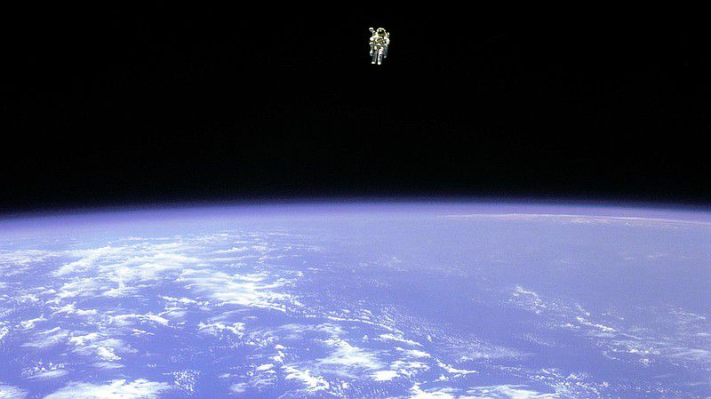
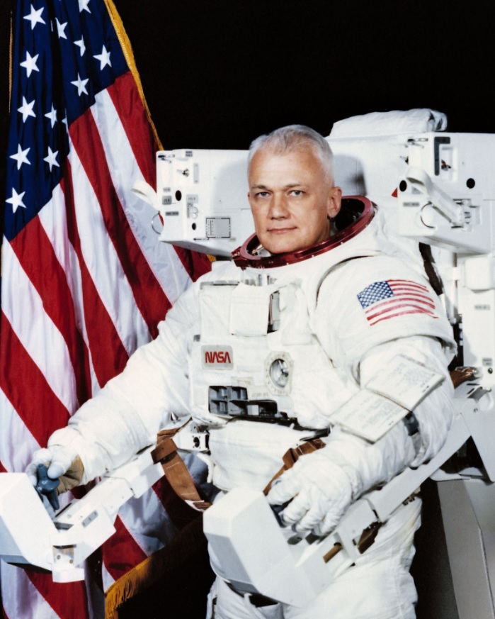

NASA 선정 "우주에서 가장 무서운 사진"
혹시 인터넷을 하다가 'NASA에서 선정한 가장 무서운 사진'
이라는 계시글을 본 적 있으신가요? 바로 이 사진
입니다.

한 우주비행사가 아무런 연결 장치 없이 우주에 덩그러니 떠있습니다. 마치 영화 〈그래비티〉 에서 우주 비행사
맷 코왈스키(조지 크루니)가 주인공을 살리고 우주로 사라져버리는 장면을 연상케 하네요. 보기만 해도 오금이
저리는데요. 설마 우주 미아가 된 우주 비행사의 마지막 모습일까요, 아니면 영화에서 연출된 장면일까요? 합성
사진이었으면 좋겠지만, 이 사진은 실제로 우주에서 촬영된 사진입니다. 미국의 우주비행사 '브루스 맥캔들리스
2세 (Bruce McCandless II)'가 우주 유영을 하고 있는 모습이죠.
(NASA에서 직접 '우주에서 찍은 가장 무서운 사진'으로 선정하지는 않았고, 미국의 커뮤니티 사이트에서 시작
된 것으로 보입니다. 또한 SNS에서 돌고 있는 사진은 과장되어 표현된 것으로, 상단의 사진이 원본입니다.)
사진의 주인공'브루스 맥캔들리스'
위에서 보여드린 사진은 지금으로부터 무려 37년 전인 1984년에 촬영된 것으로, 맥캔들리스가 우주 정거장에
서 임무를 수행하는 모습입니다. 사진을 자세히 살펴보면 맥캔들리스 뒤에 의자 같은 장치가 보입니다. 바로
'부착식 인간 조종장치(Manned Maenuvering Unit; 이하 MMU로 표기)'라는 장치인데요, 우주선과 연결되
지 않은 채로 우주비행사가 임무를 수행할 수 있도록 만든 장치입니다. 마치 유선 이어폰의 시대에서 무선 이어
폰의 시대가 찾아온 것처럼 말이죠. 맥캔들리스의 임무는 MMU가 제대로 작동하는지 테스트해보는 것이었습니
다. 덕분에 맥캔들리스는 무선(?) 우주 유영을 한 최초의 우주 비행사가 되었죠.

맥캔들리스는 자신의 우주 유영에 대해서 이렇게 밝혔습니다.
'너무 추워서 이가 덜덜 떨렸지만, 그건 아무것도 아니었다. 개인적인 기쁨
과 직업적인 자부심이 섞인 놀라운 기분을 느꼈다. 우주는 고요한 진공 상태
란 말을 들어봤지만, 무전으로 '산소 농도는 어때?', '엔진에서 멀리 떨어져!',
'내 차례는 언제야? 라고 떠들어서 그다지 평화롭진 않았다.'
-인터뷰에서